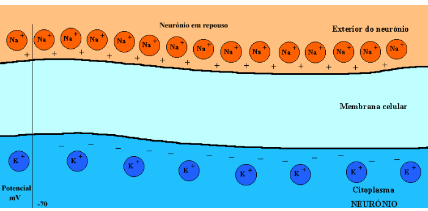

Neurônios e Sinapses
Impulso Nervoso
O que é impulso nervoso? Como funciona seu processo de transmissão?
começar
O impulso nervoso é um sinal elétrico que proporciona a comunicação entre os neurônios. Ele se propaga através da excitação eletroquímica dos neurônios. O processo de propagação do impulso nervoso é unidirecional e também feito por partes. Seu processo de transmissão pode ser dividido em três fases: despolarização, condução e repolarização.
Em resumo, a propagação do impulso nervoso é resultado da excitação eletroquímica das células nervosas, causada pela entrada de íons sódio e saída de íons potássio através de canais na membrana celular.